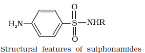

Drugs and their Classification
Drugs are chemicals of low molecular masses (~100 – 500u). These interact with macromolecular targets and produce a biological response. When the biological response is therapeutic and useful, these chemicals are called medicines and are used in diagnosis, prevention and treatment of diseases. If taken in doses higher than those recommended, most of the drugs used as medicines are potential poisons. Use of chemicals for therapeutic effect is called chemotherapy.
Classification of Drugs
Drugs can be classified mainly on criteria outlined as follows:
On the basis of pharmacological effect
This classification is based on pharmacological effect of the drugs. It is useful for doctors because it provides them the whole range of drugs available for the treatment of a particular type of problem. For example, analgesics have pain killing effect, antiseptics kill or arrest the growth of microorganisms.
On the basis of drug action
It is based on the action of a drug on a particular biochemical process. For example, all antihistamines inhibit the action of the compound, histamine which causes inflammation in the body. There are various ways in which action of histamines can be blocked.
On the basis of chemical structure
It is based on the chemical structure of the drug. Drugs classified in this way share common structural features and often have similar pharmacological activity. For example, sulphonamides have common structural feature, given below.

On the basis of molecular targets
Drugs usually interact with biomolecules such as carbohydrates, lipids, proteins and nucleic acids. These are called target molecules or drug targets. Drugs possessing some common structural features may have the same mechanism of action on targets. The classification based on molecular targets is the most useful classification for medicinal chemists.